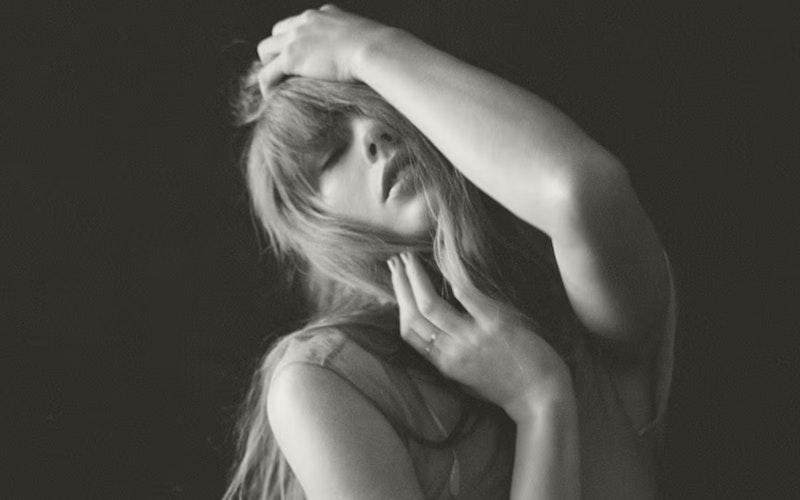

Тейлор Свифт
Те́йлор Э́лисон Свифт (англ. Taylor Alison Swift; род. 13 декабря 1989, Уэст-Рединг, Пенсильвания, США) — американская певица и автор песен. Известна своими автобиографическими песнями и творческими переосмыслениями. Влиятельная фигура в поп-культуре и объект широкого общественного интереса.
Свифт начала профессионально заниматься музыкой в 14 лет и в 2005 году подписала контракт с независимым лейблом Big Machine Records. Начиная с одноимённого студийного альбома, она выпустила шесть студийных альбомов на лейбле. Следующим релизом стал кантри-поп альбом Fearless, а синглы «Love Story» и «You Belong with Me» принесли ей широкую известность. Speak Now вобрал в себя влияние рока, а Red экспериментировал с электро-музыкой. «We Are Never Ever Getting Back Together» стала первой песней Свифт, возглавившей чарт Billboard Hot 100. Отойдя от кантри-музыки, певица выпустила синти-поп альбом 1989, синглы из которого «Shake it Off», «Blank Space» и «Bad Blood» возглавили чарты. Пристальное внимание со стороны общественности и прессы вдохновило Свифт на выпуск электропоп-альбома Reputation, а сингл «Look What You Made Me Do» лидировал в чартах.
В 2018 году Свифт подписала контракт с лейблом Republic Records и выпустила поп-альбом Lover и автобиографический документальный фильм «Мисс Американа». С 2020 года певица выпустила инди-фолк и альт-рок альбомы Folklore и Evermore и поп-альбомы Midnights и The Tortured Poets Department. После конфликта с Big Machine она перезаписала четыре из своих первых шести альбомов с пометкой «Taylor’s Version». Эти альбомы и их синглы «Cruel Summer», «Cardigan», «Willow», «All Too Well (10 Minute Version)» и «Anti-Hero» возглавили чарты и побили различные рекорды. В 2023 году Свифт отправилась в The Eras Tour, свой самый масштабный концертный тур. Также певица сняла музыкальные клипы и фильмы, включая «All Too Well: The Short Film». Свифт стала первой миллиардершей, для которой основным источником дохода является музыка, и самой кассовой гастролирующей певицей в истории.
Свифт является одной из самых продаваемых музыкантов в мире с продажами свыше 200 миллионов записей. Семь её альбомов были проданы тиражом более одного миллиона копий за неделю. В 2023 году она была признана «Человеком года» по версии журнала Time и появлялась в статьях о величайших авторах песен и исполнителях из таких авторитетных изданий, как Rolling Stone, Billboard и Forbes. 14-кратный лауреат премии «Грэмми», обладательница одной прайм-таймовой премии «Эмми», 40 статуэток American Music Awards; 39 Billboard Music Awards и 30 MTV Video Music Awards. Рекордные четыре раза она выиграла премию «Грэмми» за лучший альбом года, MTV Video Music Award за лучшее видео года и IFPI «Мировой исполнитель звукозаписи года[англ.]».
